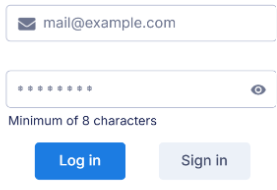

Звіт з дисципліни:
"WEB-орієнтовані технологіі. Основи frontend та backend розробок."
Студенти:
ІС-21 Поліщук Дарія(ліворуч)
ІК-23 Купрій Марина(праворуч)

Назва розробки: ВЕБ-ЗАСТОСУНОК «САЙТ ЗНАЙОМСТВ».
Тема:
Наведене технічне завдання поширюється на розробку «Веб-застосунок для знайомств», котра використовується для пошуку та знайомства людей в онлайн-форматі та призначена для соціальної взаємодії, створення нових особистих і романтичних зв’язків. Цільова аудиторія включає користувачів, зацікавлених у знайомствах для спілкування, дружби, романтичних стосунків чи довготривалих партнерських відносин.
Посилання на репозиторій
проєкту: https://github.com/dsolovyovaa/LoveLoom
Посилання на сайт: https://loveloom.onrender.com/
Стек технології
Платформа для розробки:
Node.js + React + Express.js.
React використовується для клієнтської частини. Це дозволяє створювати динамічні інтерфейси з високою продуктивністю та забезпечувати гарний користувацький досвід.
Серверна частина реалізована на Node.js із використанням Express.js, так які ці технології краще підходять для обробки асинхронних запитів у реальному часі, як це потрібно для чатів
База даних:
MongoDB
MongoDB краще підходить для швидких змін у схемах та великої кількості користувачів із різними вимогами. Тому дана бази даних краще підходить для динамічних схем і швидких змін.
Інтеграція реального часу:
Socket.IO
Socket.IO забезпечує незалежність і можливість інтеграції в існуючий стек. Тому цей інструмент був обраний за його простоту в налаштуванні та сумісність із Node.js.
Опис бізнес-логіки веб-застосунку LoveLoom
-
Створення облікового запису користувача:
- Користувач переходить на сторінку реєстрації.
- Якщо користувач вже авторизований – перенаправляється на головну сторінку.
- Інакше – заповнює реєстраційну форму, перевіряється коректність введених даних на клієнтській стороні.
- У разі коректності даних – вони надсилаються на сервер для валідації.
- Після підтвердження – створюється обліковий запис, користувач автоматично авторизується.
- Адміністратор розглядає новий профіль. Якщо виявлено небажаний контент – користувач блокується.
-
Оновлення профілю користувача:
- Користувач переходить на сторінку профілю.
- Авторизований користувач змінює поля профілю, виконується перевірка правильності введення.
- Оновлені дані зберігаються у базі даних.
- Якщо користувача було заблоковано – його доступ до сайту припиняється.
-
Пошук профілів за фільтрами:
- Користувач авторизується та відкриває сторінку з фільтрами пошуку.
- Виконується перевірка правильності введених параметрів пошуку.
- Якщо користувач не заблокований – система підбирає релевантні профілі.
- При вподобанні іншого користувача перевіряється взаємність – якщо вона є, створюється "метч".
- Інформація оновлюється в базі даних, і користувач отримує відповідне повідомлення.
-
Обмін повідомленнями:
- Користувач відкриває чат з іншим користувачем.
- Після авторизації завантажуються історія повідомлень.
- Нові повідомлення зберігаються в базі даних та відображаються обом учасникам чату.
-
Обробка скарг та блокування користувачів:
- Користувач авторизується та створює скаргу через відповідну форму.
- У разі коректного заповнення – скарга реєструється в базі даних, користувач блокується автоматично до рішення адміністратора.
- Адміністратор розглядає скаргу та або підтверджує блокування, або знімає обмеження.
ВИМОГИ ДО ПРОГРАМНОГО ЗАБЕЗПЕЧЕННЯ
Вимоги до функціональних характеристик
Програмне забезпечення повинно забезпечувати виконання наступних основних функції:Користувацького інтерфейсу
Функція аутентифікації та реєстрації користувачів;
Функція перегляду та редагування профілю;

Функція фільтрації пошуку користувачів;
Функція перегляду профілів інших користувачів;

Функція обміну повідомленнями;
Функція блокування та скарги на користувача;
Функція розгляду скарг на користувачів для адміністратора;
Функція перевірки неприйнятного контенту у нових профілях для адміністратора;
Вимоги до нефункціональних характеристик
Для користувача:
- Можливість перегляду профілів інших користувачів
- Можливість налаштувати фільтр пошуку користувачів
- Можливість обміну повідомлення між користувачами
- Можливість блокування та скарги на користувача
- Доступ до історії повідомлень
Для адміністратора системи:
- Розгляд скарг користувачів (на профілі, повідомлення, контент)
- Редагування та видалення небажаного контенту (образи, фейки, спам, цензура)
- Перевірка нових профілів і завантажених матеріалів (фото)
Додаткові вимоги:
- Адаптивний дизайн для різних типів пристроїв (десктоп, мобільний)
Вимоги до надійності:
- Контроль введення інформації та захист від некоректних дій користувача
- Валідація даних при реєстрації та авторизації
- Фільтрація небажаного або небезпечного контенту
- Цілісність інформації в базі даних
- Шифрування особистих даних
Умови експлуатації:
Умови експлуатації згідно СанПін 2.2.2.542 – 96
Вид обслуговування:
Вимоги не висуваються, оскільки розробка не потребує спеціального обслуговування
Обслуговуючий персонал:
Вимоги не висуваються, оскільки розробка не потребує обслуговуючого персоналу
Вимоги до складу і параметрів технічних засобів:
Мінімальна конфігурація:
- Тип процесору: Intel Core i5
- Обсяг ОЗП: 4 Гб
- Інтернет: від 20 Мбіт/с
Рекомендована конфігурація:
- Тип процесору: Intel Core i5
- Обсяг ОЗП: 8 Гб
- Інтернет: від 100 Мбіт/с
- ОС: Windows 10
Вимоги до інформаційної та програмної сумісності:
Програмне забезпечення повинно працювати під управлінням операційних систем сімейства WIN32 (Windows XP, Windows NT і т.д.) або Unix
Вимоги до вхідних та вихідних даних:
Вимоги не висуваються, оскільки розробка не потребує
Вимоги до мови та середовища розробки:
- Мова програмування: JavaScript (Node.js + Express)
- Середовище розробки: Visual Studio Code
Вимоги до вихідного коду:
Код має бути представлений у вигляді репозиторію
Маркування, пакування, транспортування та зберігання:
Вимоги не висуваються
Спеціальні вимоги:
Згенерувати версію веб-розгортання програмного забезпечення
Скрін головної сторінки
Вибір людей які нам подобаються
Скрінголовної сторінки">
Коли є спільний "match" з'являється чат спілкування
Скрін головної сторінки">
Чат спілкування в реальному часі
Скрін головної сторінки">
В профілі можна змінити нік, вік, вибрати кого ти шукаєш, а також обрати вікову категорію.
Можна додати фото та опис.
Скрінголовної сторінки">
Frontend
front">
Backend
Бази даних
| Назва поля | Тип даних | Опис |
|---|---|---|
| name | String | Ім'я користувача. |
| String | Електронна адреса користувача. | |
| password | String | Хешований пароль користувача. |
| age | Number | Вік користувача. |
| gender | String | Гендер користувача: "man" або "woman". |
| bio | String | Короткий опис користувача (біографія). |
| image | String | Посилання на зображення профілю користувача. |
| genderPreference | String | Гендер, який користувач шукає: "man", "woman", або "everyone". |
| ageSearchMin | Number | Мінімальний вік для пошуку партнерів. |
| ageSearchMax | Number | Максимальний вік для пошуку партнерів. |
| likes | [ObjectId] (ref: User) | Масив користувачів, яких лайкнув цей користувач. |
| dislikes | [ObjectId] (ref: User) | Масив користувачів, яких дизлайкнув цей користувач. |
| matches | [ObjectId] (ref: User) | Масив користувачів, з якими є взаємний лайк (метч). |
| blocked | [ObjectId] (ref: User) | Масив користувачів, заблокованих цим користувачем. |
| role | String | Роль користувача: "user" або "admin". |
| isBlocked | Boolean | Статус блокування користувача (адміністратором). |
| isVerified | Boolean | Статус верифікації профілю користувача. |
| createdAt | Date | Дата створення профілю. |
| updatedAt | Date | Дата останнього оновлення профілю. |
| Назва поля | Тип даних | Опис |
|---|---|---|
| sender | ObjectId (ref: User) | Ідентифікатор користувача, який відправив повідомлення. |
| receiver | ObjectId (ref: User) | Ідентифікатор користувача, який отримав повідомлення. |
| content | String | Текст повідомлення. |
| createdAt | Date | Дата та час відправлення повідомлення. |
| updatedAt | Date | Дата та час останнього оновлення повідомлення. |
| Назва поля | Тип даних | Опис |
|---|---|---|
| user | ObjectId (ref: User) | Ідентифікатор користувача, який подав скаргу. |
| blockedUser | ObjectId (ref: User) | Ідентифікатор користувача, на якого подана скарга. |
| reasons | [String] | Причини подання скарги. |
| additionalInfo | String | Додаткова інформація про причини скарги. |
| status | String | Статус розгляду скарги: "pending" або "resolved". |
| createdAt | Date | Дата подання скарги. |
| updatedAt | Date | Дата останнього оновлення скарги. |
Висновки
Проєкт було присвячено розробці веб-застосунку для автоматизації процесу знайомства між користувачами. Його реалізація має важливе практичне значення, оскільки відповідає сучасним вимогам до зручності, швидкості та безпеки онлайн-сервісів.
Робота над проєктом охопила всі етапи життєвого циклу ПЗ — від аналізу вимог до впровадження повноцінного функціоналу. Застосовано REST API на базі Node.js та Express.js, авторизацію реалізовано через JWT, дані захищено за допомогою bcryptjs. Рекомендаційна система базується на фільтрації за параметрами та взаємодії користувачів, а MongoDB з Mongoose забезпечує зручну роботу з базою даних.
Обмін повідомленнями реалізовано з використанням Socket.IO, що дозволяє працювати в реальному часі. Інтерфейс побудовано за допомогою React.js, що забезпечило його інтуїтивність і адаптивність.
Проєкт став прикладом ефективного використання сучасних технологій для створення безпечної, масштабованої та зручної платформи для онлайн-знайомств.